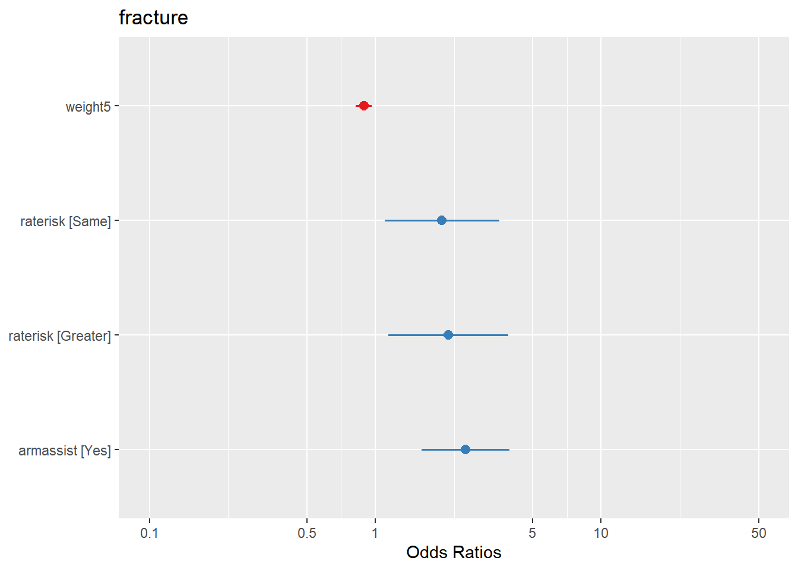
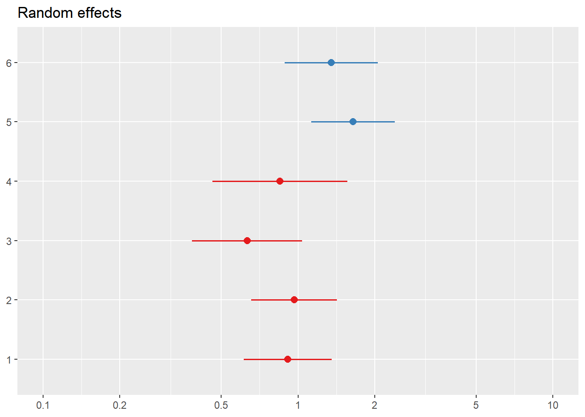
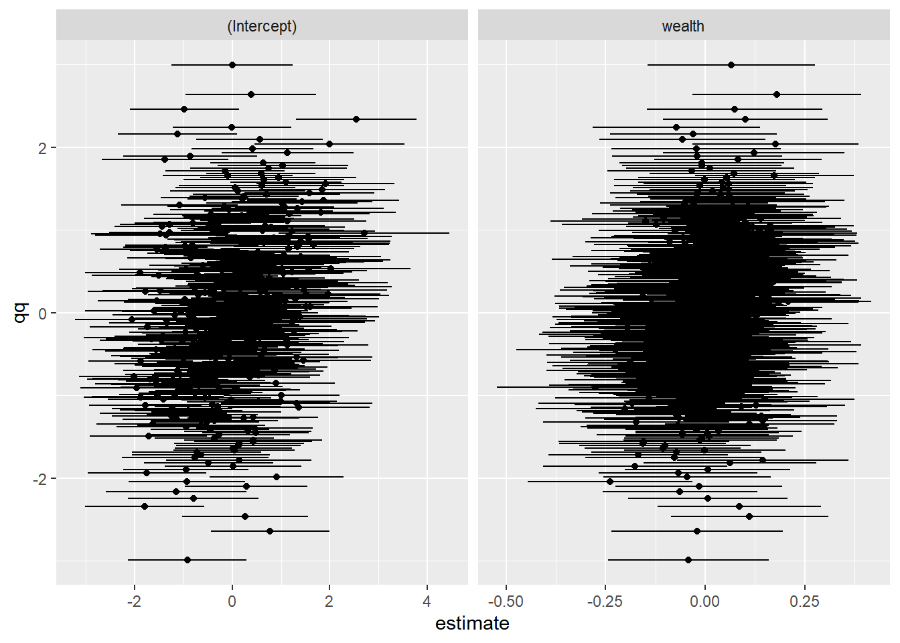
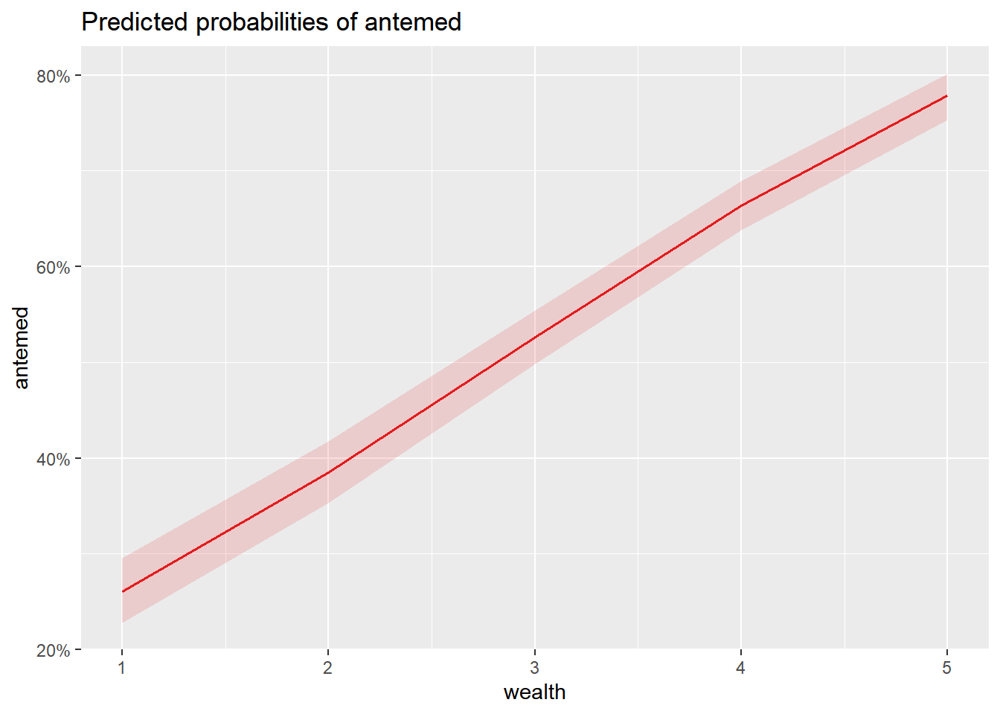
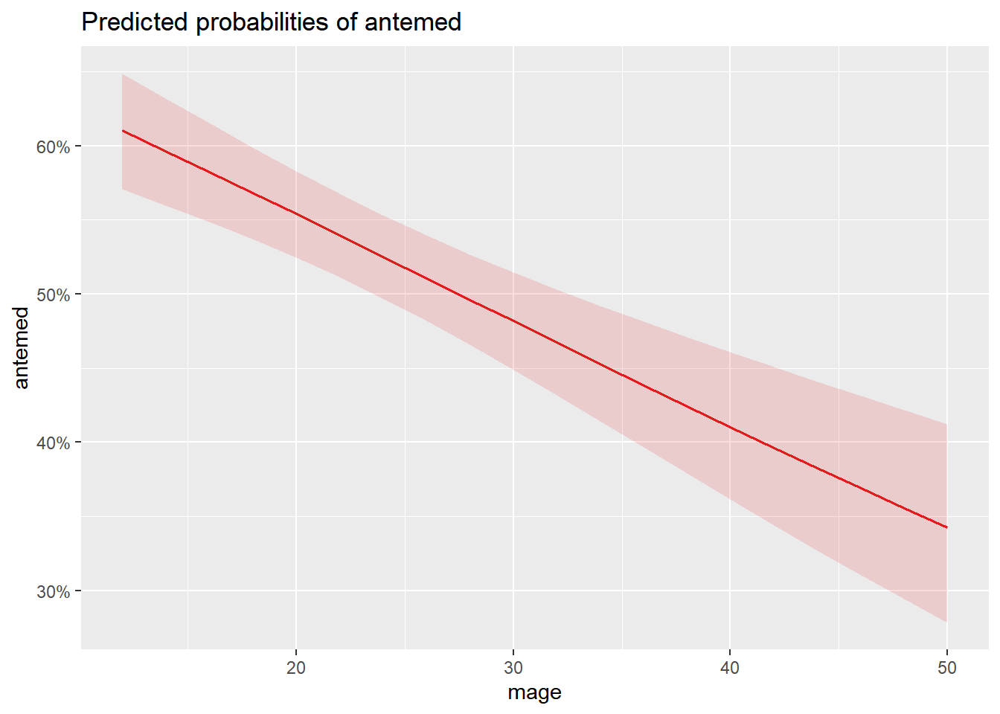
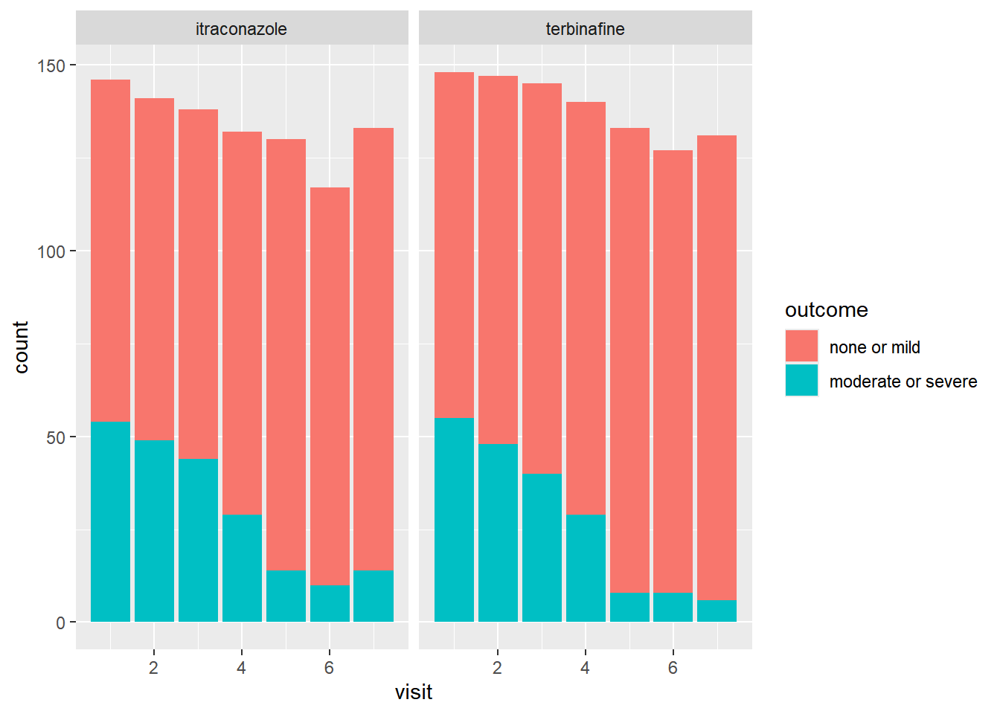
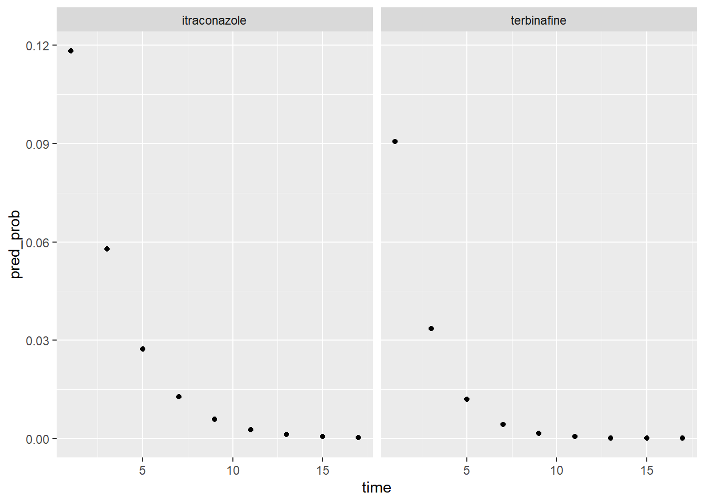
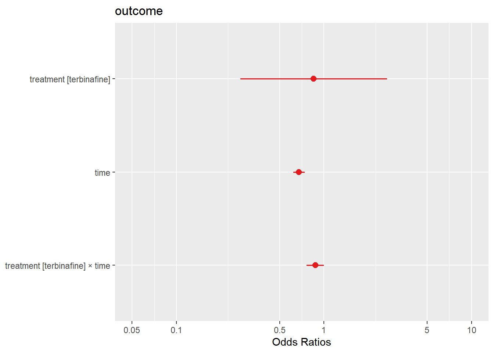
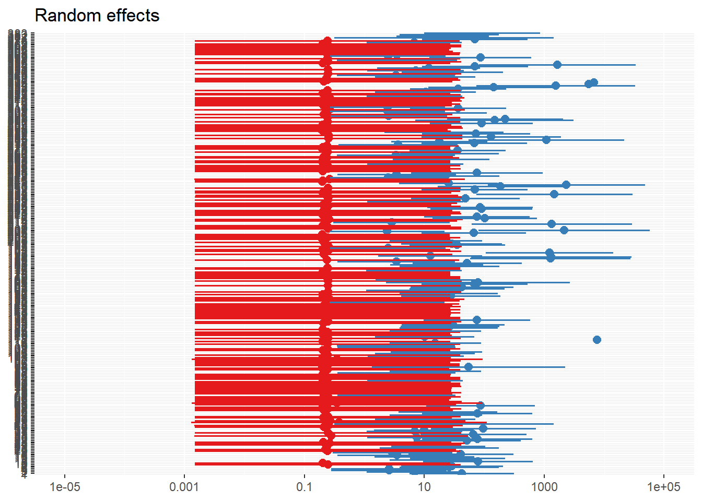

# Load the libraries
library(tidyverse)
library(aplore3)
library(summarytools)
library(broom.mixed)
library(lme4)
library(gee)
library(sjPlot)
library(kableExtra)
library(ggplot2)
library(dplyr)
library(DT)
library(sjPlot)
library(HSAUR2)Logistic Regression with Correlated Data
Advanced Categorical Data Analysis
About This Document
This document serves both learning and practical purposes. It is designed for educational use, aiming to enhance statistical analysis skills and provide clear, organized notes for future reference.
1 Introduction
Logistic regression for correlated data is designed to handle situations where binary outcomes (e.g., success/failure) are not independent, such as in clustered data (e.g., patients within hospitals) or repeated measures (e.g., multiple observations over time on the same subject). Standard logistic regression assumes independence among observations, which, when violated, leads to biased estimates and incorrect inferences. To address this, two primary models are used: marginal models and conditional models.
1.1 Marginal Models (Population Average Models)
Marginal models focus on estimating the average effect of covariates across the entire population. They use Generalized Estimating Equations (GEE) to account for the correlation within clusters. The GEE approach specifies a working correlation structure (e.g., independence, exchangeable, auto-regressive, unstructured) to adjust for within-cluster correlations and provides robust population-level estimates.
1.2 Conditional Models (Random Effects Models)
Conditional models include random effects to capture variability within clusters, offering subject-specific or cluster-specific inferences.
Random Intercept Models: Allow the intercept to vary across clusters, capturing baseline differences. Represent the average effect of covariates on the log-odds of the outcome.
Random Slope Models: Allow both the intercept and the slope of the covariate to vary across clusters, capturing differences in the effect of covariates. Capture unobserved heterogeneity between clusters or subjects.
2 Setting Up the Environment
Load the necessary libraries to ensure the R environment is equipped with the tools and functions required for efficient and effective analysis.
3 Multilevel Random Intercept Model
Random intercept model is used to account for hierarchical or nested data structures. This model includes both fixed effects, which apply to the entire population, and random effects, which account for the variability between clusters by allowing each cluster to have its own intercept, which captures the baseline level of the response variable for that cluster.
3.1 Dataset Overview
The dataset is from the book “Applied Logistic Regression” by Hosmer, Lemeshow, and Sturdivant (2013). The specific dataset referred to is called GLOW_RAND, which contains 500 observations. This dataset is used for demonstrating logistic regression techniques and can be loaded in R using the aplore3 package. The dataset contains:
6 sites: The number of subjects per site varies from as few as 24 in one site (site 4) to as many as 113 in another site (site 2).
124 physicians: The number of subjects treated by each physician varies from 1 to 13.
Outcome of Interest: Whether a fracture occurred in the first year of follow-up (fracture), coded as
NO(0) orYES(1).
# Data wrangling
data_glow <- glow_rand
glimpse(data_glow)Rows: 500
Columns: 15
$ sub_id <int> 1, 2, 3, 4, 5, 6, 7, 8, 9, 10, 11, 12, 13, 14, 15, 16, 17, 1…
$ site_id <int> 2, 3, 3, 4, 5, 1, 3, 5, 5, 1, 1, 6, 2, 2, 3, 1, 1, 1, 2, 3, …
$ phy_id <int> 80, 95, 184, 280, 289, 39, 114, 297, 294, 39, 28, 313, 71, 7…
$ priorfrac <fct> No, No, No, No, No, No, Yes, No, No, No, Yes, Yes, No, Yes, …
$ age <int> 69, 66, 62, 69, 58, 86, 64, 75, 62, 80, 74, 85, 58, 66, 61, …
$ weight <dbl> 72.6, 79.4, 78.5, 72.6, 48.5, 80.7, 68.0, 77.1, 49.9, 62.6, …
$ height <dbl> 157.5, 162.6, 170.2, 154.9, 157.5, 154.9, 175.3, 160.0, 160.…
$ bmi <dbl> 29.3, 30.0, 27.1, 30.2, 19.6, 33.6, 22.2, 30.1, 19.5, 26.1, …
$ premeno <fct> No, No, No, Yes, No, No, No, Yes, No, No, No, No, No, Yes, N…
$ momfrac <fct> No, No, No, No, No, Yes, No, No, No, No, No, No, No, No, No,…
$ armassist <fct> Yes, Yes, No, Yes, No, No, No, Yes, No, No, No, No, No, No, …
$ smoke <fct> No, No, No, Yes, No, No, No, No, No, No, Yes, No, No, No, No…
$ raterisk <fct> Greater, Greater, Same, Same, Greater, Same, Greater, Less, …
$ fracscore <int> 4, 4, 1, 4, 1, 7, 2, 6, 2, 5, 5, 7, 0, 3, 1, 7, 6, 3, 4, 7, …
$ fracture <fct> No, No, No, No, No, No, No, No, No, No, No, No, No, No, No, …3.2 Hierarchical Data Structure
The data is structured in multiple levels to account for the correlation within clusters. Each level represents a different grouping or clustering of the data:
Level 1: Subject
- This is the individual level, where each
sub_idrepresents a unique participant or subject in the study. - A participant in a clinical study with specific characteristics like age, gender, medical history, etc.
- This is the individual level, where each
Level 2: Physician for Subject
- This level groups subjects under the same physician. Each
phy_idrepresents a unique physician who is responsible for multiple subjects. - All subjects treated by the same doctor. This introduces correlation because subjects under the same physician might receive similar treatments or follow similar protocols.
- This level groups subjects under the same physician. Each
Level 3: Site Where Physician Works
- This is the highest level, grouping physicians by the site or location where they work. Each
site_idrepresents a unique site, such as a hospital or clinic. - All physicians working in the same hospital. This adds another layer of correlation because practices and resources can vary between sites, affecting the subjects treated there.
- This is the highest level, grouping physicians by the site or location where they work. Each
# Data structure
data_glow %>% count(site_id) site_id n
1 1 111
2 2 113
3 3 76
4 4 24
5 5 99
6 6 77data_glow %>%
count(site_id, phy_id) %>%
datatable()3.3 Estimation
In hierarchical or nested data structures, observations within the same group tend to be more similar to each other than to observations in different groups. This leads to correlation within groups, which needs to be accounted for in the analysis to avoid biased estimates and incorrect inferences.
3.3.1 Sources of Correlation
In this dataset, there are two possible sources of correlation:
Physician (
phy_id): Subjects (Level 1) are grouped under the same physician (Level 2). This means that subjects treated by the same physician may have more similar outcomes compared to subjects treated by different physicians.Site (
site_id): Physicians (Level 2) are grouped under the same site (Level 3). This means that physicians working at the same site may follow similar protocols or share resources, leading to more similar outcomes for their subjects compared to physicians working at different sites.
Because of these nested structures, we consider using random effects models to account for the correlation within these groups. However, in this analysis, the focus is on a two-level model using only the site level (site_id).
3.3.2 Model Variables
The following covariates are used:
weight5: Continuous variable representing the weight (kg) at enrollment, divided by 5. Dividing by 5 helps in interpreting the coefficient more easily, as it will represent the change in log-odds for a 5 kg increase in weight.armassist: Dichotomous variable indicating whether the subject needs assistance with their arms to stand.raterisk: Three-level categorical variable indicating the self-reported risk of fracture (low, medium, high).
3.3.3 Data Transformation
# Data transformation
data_glow2 <- data_glow %>%
mutate(
weight5 = weight / 5,
frac2 = as.integer(fracture) - 1
)
# Summarize the transformed data
dfSummary(data_glow2)Data Frame Summary
data_glow2
Dimensions: 500 x 17
Duplicates: 0
--------------------------------------------------------------------------------------------------------------
No Variable Stats / Values Freqs (% of Valid) Graph Valid Missing
---- ----------- --------------------------- --------------------- ---------------------- ---------- ---------
1 sub_id Mean (sd) : 250.5 (144.5) 500 distinct values : : : : : : : : : : 500 0
[integer] min < med < max: (Integer sequence) : : : : : : : : : : (100.0%) (0.0%)
1 < 250.5 < 500 : : : : : : : : : :
IQR (CV) : 249.5 (0.6) : : : : : : : : : :
: : : : : : : : : :
2 site_id Mean (sd) : 3.2 (1.8) 1 : 111 (22.2%) IIII 500 0
[integer] min < med < max: 2 : 113 (22.6%) IIII (100.0%) (0.0%)
1 < 3 < 6 3 : 76 (15.2%) III
IQR (CV) : 3 (0.6) 4 : 24 ( 4.8%)
5 : 99 (19.8%) III
6 : 77 (15.4%) III
3 phy_id Mean (sd) : 163.9 (117.8) 124 distinct values : . 500 0
[integer] min < med < max: : : : : (100.0%) (0.0%)
1 < 139 < 325 : : : :
IQR (CV) : 241 (0.7) : : . : : :
: : : : : :
4 priorfrac 1. No 359 (71.8%) IIIIIIIIIIIIII 500 0
[factor] 2. Yes 141 (28.2%) IIIII (100.0%) (0.0%)
5 age Mean (sd) : 68.6 (8.7) 36 distinct values : . : 500 0
[integer] min < med < max: : : : . (100.0%) (0.0%)
55 < 67 < 90 : : : : :
IQR (CV) : 14 (0.1) : : : : : :
: : : : : : :
6 weight Mean (sd) : 71.8 (15.1) 120 distinct values : : 500 0
[numeric] min < med < max: : : : (100.0%) (0.0%)
38.1 < 70.3 < 129.3 . : : :
IQR (CV) : 19 (0.2) : : : : :
: : : : : . . .
7 height Mean (sd) : 161.9 (6.3) 17 distinct values : : 500 0
[numeric] min < med < max: : : (100.0%) (0.0%)
142.2 < 162.6 < 182.9 . : : :
IQR (CV) : 7.6 (0) : : : : .
. : : : : : .
8 bmi Mean (sd) : 27.4 (5.4) 178 distinct values . : 500 0
[numeric] min < med < max: : : (100.0%) (0.0%)
15.4 < 26.6 < 48.1 : : .
IQR (CV) : 7.2 (0.2) : : :
. : : : : .
9 premeno 1. No 409 (81.8%) IIIIIIIIIIIIIIII 500 0
[factor] 2. Yes 91 (18.2%) III (100.0%) (0.0%)
10 momfrac 1. No 432 (86.4%) IIIIIIIIIIIIIIIII 500 0
[factor] 2. Yes 68 (13.6%) II (100.0%) (0.0%)
11 armassist 1. No 309 (61.8%) IIIIIIIIIIII 500 0
[factor] 2. Yes 191 (38.2%) IIIIIII (100.0%) (0.0%)
12 smoke 1. No 469 (93.8%) IIIIIIIIIIIIIIIIII 500 0
[factor] 2. Yes 31 ( 6.2%) I (100.0%) (0.0%)
13 raterisk 1. Less 137 (27.4%) IIIII 500 0
[factor] 2. Same 210 (42.0%) IIIIIIII (100.0%) (0.0%)
3. Greater 153 (30.6%) IIIIII
14 fracscore Mean (sd) : 3.6 (2.5) 11 distinct values : 500 0
[integer] min < med < max: : . . (100.0%) (0.0%)
0 < 3 < 10 : : : :
IQR (CV) : 3 (0.7) : : : : : . . .
: : : : : : : : .
15 fracture 1. No 375 (75.0%) IIIIIIIIIIIIIII 500 0
[factor] 2. Yes 125 (25.0%) IIIII (100.0%) (0.0%)
16 weight5 Mean (sd) : 14.4 (3) 120 distinct values : : 500 0
[numeric] min < med < max: : : : (100.0%) (0.0%)
7.6 < 14.1 < 25.9 . : : :
IQR (CV) : 3.8 (0.2) : : : : :
: : : : : . . .
17 frac2 Min : 0 0 : 375 (75.0%) IIIIIIIIIIIIIII 500 0
[numeric] Mean : 0.2 1 : 125 (25.0%) IIIII (100.0%) (0.0%)
Max : 1
--------------------------------------------------------------------------------------------------------------A new variable
weight5is created by dividing the original weight by 5. For example, if the original weight is 70 kg,weight5will be 70/5 = 14. This transformation is done so that the coefficient forweight5in the logistic regression model represents the change in log-odds for a 5 kg increase in weight, making interpretation easier.The
fracturevariable is originally coded asNOandYES. This step converts it into a numeric format whereNObecomes 0 andYESbecomes 1. Theas.integer()function convertsNOto 1 andYESto 2, so subtracting 1 results inNObecoming 0 andYESbecoming 1.
3.3.4 Population Average Model
Population Average Model is used to estimate the average effect of predictors on the outcome across the entire population. This approach is implemented using Generalized Estimating Equations (GEE).
# Fit the GEE model
glow_gee <- gee(frac2 ~ weight5 + raterisk + armassist,
id = site_id, data = data_glow2,
family = binomial(link = "logit"), corstr = "independence",
scale.fix = TRUE, scale.value = 1, maxiter = 100
) (Intercept) weight5 rateriskSame rateriskGreater armassistYes
-0.3424651 -0.1211036 0.7208085 0.7713922 0.9012544 # View the GEE model
glow_gee
GEE: GENERALIZED LINEAR MODELS FOR DEPENDENT DATA
gee S-function, version 4.13 modified 98/01/27 (1998)
Model:
Link: Logit
Variance to Mean Relation: Binomial
Correlation Structure: Independent
Call:
gee(formula = frac2 ~ weight5 + raterisk + armassist, id = site_id,
data = data_glow2, maxiter = 100, family = binomial(link = "logit"),
corstr = "independence", scale.fix = TRUE, scale.value = 1)
Number of observations : 500
Maximum cluster size : 4
Coefficients:
(Intercept) weight5 rateriskSame rateriskGreater armassistYes
-0.3424651 -0.1211036 0.7208085 0.7713922 0.9012544
Estimated Scale Parameter: 1
Number of Iterations: 1
Working Correlation[1:4,1:4]
[,1] [,2] [,3] [,4]
[1,] 1 0 0 0
[2,] 0 0 0 0
[3,] 0 0 0 0
[4,] 0 0 0 0
Returned Error Value:
[1] 0Summary of Output
Model Formula:
frac2 ~ weight5 + raterisk + armassistspecifies the dependent variable (frac2) and the independent variables (weight5,raterisk, andarmassist).- ID:
site_idindicates that clustering is by site. - Data:
data_glow2is the dataset used. - Max Iterations: The maximum number of iterations for the algorithm is set to 100.
- Family:
binomial(link = "logit")indicates a logistic regression model. - Correlation Structure:
independencespecifies an independent correlation structure. - Scale: The scale parameter is fixed at 1.
- ID:
Interpretation
- Intercept: The baseline log-odds of having a fracture when all predictors are at their reference levels is -0.342.
- weight5: A 5 kg increase in weight is associated with a decrease in the log-odds of having a fracture by 0.121.
- rateriskSame: Compared to low risk, the same risk increases the log-odds of having a fracture by 0.721.
- rateriskGreater: Compared to low risk, greater risk increases the log-odds of having a fracture by 0.771.
- armassistYes: Needing arm assistance increases the log-odds of having a fracture by 0.901.
Proceed with the calculation of log odds and odds ratios from the model coefficients. coef() function extracts the estimated coefficients (log odds) from the GEE model glow_gee, and exp() function exponentiates the coefficients to convert them from log odds to odds ratios.
res_glow_gee <- data.frame(
log_odds = coef(glow_gee),
odds_ratio = exp(coef(glow_gee))
)
res_glow_gee log_odds odds_ratio
(Intercept) -0.3424651 0.7100179
weight5 -0.1211036 0.8859421
rateriskSame 0.7208085 2.0560948
rateriskGreater 0.7713922 2.1627751
armassistYes 0.9012544 2.4626903Summary of Output
Intercept:
- Log Odds: -0.3424651, Odds Ratio: 0.7100179
- The odds ratio of the baseline category (when all predictors are at their reference levels) is 0.71, indicating that the odds of having a fracture are 29% lower compared to the reference category.
weight5:
- Log Odds: -0.1211036, Odds Ratio: 0.8859421
- For each 5 kg increase in weight, the odds of having a fracture decrease by 11.4% (odds ratio of 0.886).
rateriskSame:
- Log Odds: 0.7208085, Odds Ratio: 2.0560948
- Compared to the reference category (low risk), the odds of having a fracture are approximately 2.06 times higher for those with the same risk.
rateriskGreater:
- Log Odds: 0.7713922, Odds Ratio: 2.1627751
- Compared to the reference category (low risk), the odds of having a fracture are approximately 2.16 times higher for those with a greater risk.
armassistYes:
- Log Odds: 0.9012544, Odds Ratio: 2.4626903
- The odds of having a fracture are approximately 2.46 times higher for those who need assistance with their arms to stand compared to those who do not.
3.3.5 Conditional (Clustered-Specific) Model
The conditional model, also known as the clustered-specific model, takes into account the correlation within clusters (e.g., subjects within the same site). There are two common models in this context:
- Random intercept model: Allows the intercept to vary across clusters.
- Random slope model: Allows the slope (effect of predictors) to vary across clusters.
### Running the Random Intercept Model
glow_lme <- glmer(fracture ~ weight5 + raterisk + armassist + (1 | site_id),
family = binomial,
nAGQ = 20,
data = data_glow2
)
summary(glow_lme)Generalized linear mixed model fit by maximum likelihood (Adaptive
Gauss-Hermite Quadrature, nAGQ = 20) [glmerMod]
Family: binomial ( logit )
Formula: fracture ~ weight5 + raterisk + armassist + (1 | site_id)
Data: data_glow2
AIC BIC logLik deviance df.resid
534.9 560.2 -261.4 522.9 494
Scaled residuals:
Min 1Q Median 3Q Max
-1.1986 -0.5891 -0.4360 0.0838 4.0973
Random effects:
Groups Name Variance Std.Dev.
site_id (Intercept) 0.1531 0.3913
Number of obs: 500, groups: site_id, 6
Fixed effects:
Estimate Std. Error z value Pr(>|z|)
(Intercept) -0.47129 0.64236 -0.734 0.46314
weight5 -0.11580 0.04057 -2.854 0.00431 **
rateriskSame 0.68311 0.29696 2.300 0.02143 *
rateriskGreater 0.74525 0.31284 2.382 0.01721 *
armassistYes 0.92266 0.22795 4.048 5.17e-05 ***
---
Signif. codes: 0 '***' 0.001 '**' 0.01 '*' 0.05 '.' 0.1 ' ' 1
Correlation of Fixed Effects:
(Intr) weght5 rtrskS rtrskG
weight5 -0.870
rateriskSam -0.321 -0.001
raterskGrtr -0.464 0.183 0.667
armassistYs 0.092 -0.273 -0.013 -0.075Formula:
fracture ~ weight5 + raterisk + armassist + (1 | site_id)fracture: Dependent variable.weight5,raterisk,armassist: Independent variables (predictors).(1 | site_id): Random intercept for each site.
family = binomial: Indicates logistic regression.
nAGQ = 20: Number of points for adaptive Gauss-Hermite quadrature, used to improve the accuracy of the estimation.
data = data_glow: Specifies the dataset.
3.3.5.1 Log Odds
The broom package is useful for converting model objects into tidy data frames, which are easier to work with.
# Using `tidy` for a Tidy Output
tidy(glow_lme, conf.int = TRUE)# A tibble: 6 × 9
effect group term estimate std.error statistic p.value conf.low conf.high
<chr> <chr> <chr> <dbl> <dbl> <dbl> <dbl> <dbl> <dbl>
1 fixed <NA> (Int… -0.471 0.642 -0.734 4.63e-1 -1.73 0.788
2 fixed <NA> weig… -0.116 0.0406 -2.85 4.31e-3 -0.195 -0.0363
3 fixed <NA> rate… 0.683 0.297 2.30 2.14e-2 0.101 1.27
4 fixed <NA> rate… 0.745 0.313 2.38 1.72e-2 0.132 1.36
5 fixed <NA> arma… 0.923 0.228 4.05 5.17e-5 0.476 1.37
6 ran_pars site_… sd__… 0.391 NA NA NA NA NA 3.3.5.2 Odds Ratios
To get the odds ratios, exponentiate the log odds (coefficients).
res_glow_lme <- tidy(glow_lme, exponentiate = TRUE, conf.int = TRUE)
res_glow_lme %>%
kbl() %>%
kable_styling()| effect | group | term | estimate | std.error | statistic | p.value | conf.low | conf.high |
|---|---|---|---|---|---|---|---|---|
| fixed | NA | (Intercept) | 0.6241976 | 0.4009606 | -0.7336806 | 0.4631434 | 0.1772323 | 2.1983729 |
| fixed | NA | weight5 | 0.8906527 | 0.0361334 | -2.8543695 | 0.0043122 | 0.8225750 | 0.9643647 |
| fixed | NA | rateriskSame | 1.9800318 | 0.5879852 | 2.3003730 | 0.0214271 | 1.1063729 | 3.5435845 |
| fixed | NA | rateriskGreater | 2.1069703 | 0.6591381 | 2.3822348 | 0.0172079 | 1.1412246 | 3.8899650 |
| fixed | NA | armassistYes | 2.5159854 | 0.5735138 | 4.0476976 | 0.0000517 | 1.6094535 | 3.9331254 |
| ran_pars | site_id | sd__(Intercept) | 0.3913015 | NA | NA | NA | NA | NA |
Summary of Output
Model Fit Statistics
- AIC: 534.9, BIC: 560.2
- Lower AIC and BIC values generally indicate a better-fitting model.
Scaled Residuals: These values indicate the distribution of the residuals (differences between observed and predicted values). Ideally, these should be symmetrically distributed around zero.
Random Effects: The random intercept for each site captures the variability in the baseline log-odds of fractures across different sites.
- Groups: Random effects are grouped by
site_id. - Intercept Variance: 0.1531
- Intercept Std. Dev.: 0.3913
- Number of Observations: 500
- Number of Groups (sites): 6
- Groups: Random effects are grouped by
Fixed Effects
(Intercept): The baseline log-odds and odds ratio represent the likelihood of having a fracture when all predictors are at their reference levels. This effect is not statistically significant.
weight5: For each 5 kg increase in weight, the log-odds of having a fracture decrease by 0.1158, and the odds decrease by about 10.9% (odds ratio = 0.891). This effect is statistically significant, indicating that higher weight reduces the likelihood of fractures.
rateriskSame: Compared to the reference category (low risk), having the same risk increases the log-odds of having a fracture by 0.6831, and the odds increase by about 98% (odds ratio = 1.98). This effect is statistically significant, indicating that subjects who perceive themselves at the same risk are more likely to experience fractures compared to those at low risk.
rateriskGreater: Compared to the reference category (low risk), having a greater risk increases the log-odds of having a fracture by 0.7453, and the odds increase by about 111% (odds ratio = 2.11). This effect is statistically significant, indicating that subjects who perceive themselves at greater risk are more likely to experience fractures compared to those at low risk.
armassistYes: Needing assistance with arms to stand increases the log-odds of having a fracture by 0.9227, and the odds increase by about 152% (odds ratio = 2.52). This effect is highly statistically significant, indicating that subjects who need arm assistance to stand are significantly more likely to experience fractures compared to those who do not need assistance.
Correlation of Fixed Effects
- Correlation matrix shows the correlation between the fixed effects.
- For example,
weight5is highly negatively correlated with the intercept (-0.870), meaning that higher weights are associated with lower baseline log-odds of fractures.
Conclusion: The model fits the data well, as indicated by the AIC and BIC values. There is variability in the baseline log-odds of fractures across different sites. These results indicate that weight, risk assessment, and arm assistance significantly influence the likelihood of fractures, with some variation between different sites.
3.3.5.3 Interpretation
The odds of a fracture in the first year computed from the proportion of subjects requiring arm assistance to stand is 2.52 times that based on the proportion of subjects not requiring arm assistance, holding self-reported risk of fracture and weight constant.
The population average odds ratio for a 5 kg increase in weight is 0.89. The interpretation is that the odds of a fracture in the first year computed from the proportion of subjects weighing 5 kg more than some reference weight is about 11% lower than that based on the reference weight, holding self-reported risk and arm assistance constant.
The interpretation is that the odds of fracture in the first year of follow-up computed from the proportion of subjects reporting the same risk as others in the same age group is 1.98 times the odds of fracture in the first year of follow-up based on the proportion of subjects who report lower risk than others in the same age group, holding weight and arm assistance required constant.
The interpretation is that the odds of fracture in the first year of follow-up computed from the proportion of subjects reporting higher risk than others in the same age group is 2.11 times the odds of fracture in the first year of follow-up based on the proportion of subjects who report lower risk than others in the same age group, holding weight and arm assistance required constant.
3.4 Random Effect
Random effect refers to the variability in the intercepts for different sites. There are six sites, so there are six random intercepts.
# Extracting Random Effects
re_glow_lme <- tidy(glow_lme, effects = "ran_vals", conf.int = TRUE)
re_glow_lme# A tibble: 6 × 8
effect group level term estimate std.error conf.low conf.high
<chr> <chr> <chr> <chr> <dbl> <dbl> <dbl> <dbl>
1 ran_vals site_id 1 (Intercept) -0.0927 0.202 -0.488 0.303
2 ran_vals site_id 2 (Intercept) -0.0355 0.197 -0.422 0.351
3 ran_vals site_id 3 (Intercept) -0.460 0.254 -0.958 0.0387
4 ran_vals site_id 4 (Intercept) -0.164 0.311 -0.774 0.446
5 ran_vals site_id 5 (Intercept) 0.496 0.193 0.118 0.873
6 ran_vals site_id 6 (Intercept) 0.300 0.214 -0.119 0.720
Note
Each row corresponds to a site and shows the random intercept for that site along with the standard error and confidence intervals.
The sum of the random effect and the constant (overall intercept, which is -0.471) is the predicted intercept value for each site.
# Calculating Site-Specific Intercepts
re_glow_lme %>%
mutate(
overall_intercept = -0.471,
site_intercept = estimate + overall_intercept
) %>%
kbl() %>%
kable_styling()| effect | group | level | term | estimate | std.error | conf.low | conf.high | overall_intercept | site_intercept |
|---|---|---|---|---|---|---|---|---|---|
| ran_vals | site_id | 1 | (Intercept) | -0.0926875 | 0.2017820 | -0.4881729 | 0.3027980 | -0.471 | -0.5636875 |
| ran_vals | site_id | 2 | (Intercept) | -0.0355124 | 0.1969530 | -0.4215331 | 0.3505084 | -0.471 | -0.5065124 |
| ran_vals | site_id | 3 | (Intercept) | -0.4595176 | 0.2541846 | -0.9577103 | 0.0386751 | -0.471 | -0.9305176 |
| ran_vals | site_id | 4 | (Intercept) | -0.1641113 | 0.3113168 | -0.7742811 | 0.4460584 | -0.471 | -0.6351113 |
| ran_vals | site_id | 5 | (Intercept) | 0.4956664 | 0.1926745 | 0.1180313 | 0.8733015 | -0.471 | 0.0246664 |
| ran_vals | site_id | 6 | (Intercept) | 0.3004812 | 0.2142455 | -0.1194322 | 0.7203946 | -0.471 | -0.1705188 |
- Site 1: Combined intercept is -0.564
- Site 2: Combined intercept is -0.507
- Site 3: Combined intercept is -0.931
- Site 4: Combined intercept is -0.635
- Site 5: Combined intercept is 0.026
- Site 6: Combined intercept is -0.171
Interpretation:
Random Intercepts: Each site’s intercept deviates from the overall intercept (-0.471) due to the random effects. This accounts for site-specific variability.
Combined Intercepts: The combined intercepts are the sum of the overall intercept and the site-specific random intercepts. These represent the predicted log-odds of fractures for each site when all predictors are at their reference levels.
3.5 Plots
sjPlot package is used to create visualizations to illustrate the effects of predictors (fixed effects) and the variability across groups (random effects).
3.5.1 Fixed Effect Plot
The fixed effects plot provides a visual representation of the odds ratios for each predictor in the model, showing their effects on the outcome (fracture). Predictors with confidence intervals that do not cross 1 are statistically significant.
plot_model(glow_lme, type = "est")
3.5.2 Random Effect Plot
The random effects plot provides a visual representation of the random intercepts for each site, showing how each site’s intercept deviates from the overall intercept. Sites with significant deviations have confidence intervals that do not cross 1.
plot_model(glow_lme, type = "re")
3.6 Prediction
Prediction is made using the fitted mixed-effects logistic regression model. It is divided into predictions for individual subjects (level 1) and sites (level 2).
3.6.1 Prediction for Subjects (Level 1)
The objective here is to predict the logit (log-odds) and probabilities for individual subjects.
augment(glow_lme) %>%
slice(1:30) %>%
kbl() %>%
kable_styling()| fracture | weight5 | raterisk | armassist | site_id | .fitted | .resid | .hat | .cooksd | .fixed | .mu | .offset | .sqrtXwt | .sqrtrwt | .weights | .wtres | .eta |
|---|---|---|---|---|---|---|---|---|---|---|---|---|---|---|---|---|
| No | 14.52 | Greater | Yes | 2 | -0.5203110 | -0.9658749 | 0.0727590 | 0.0100592 | -0.4847986 | 0.3727795 | 0 | 0.4835442 | 2.068064 | 1 | -0.7709317 | -0.5203110 |
| No | 15.88 | Greater | Yes | 3 | -1.1018052 | -0.7574758 | 0.1132251 | 0.0095684 | -0.6422876 | 0.2494018 | 0 | 0.4326668 | 2.311247 | 1 | -0.5764293 | -1.1018052 |
| No | 15.70 | Same | No | 3 | -2.0657637 | -0.4884917 | 0.1016000 | 0.0031903 | -1.6062461 | 0.1124692 | 0 | 0.3159429 | 3.165129 | 1 | -0.3559796 | -2.0657637 |
| No | 14.52 | Same | Yes | 4 | -0.7110481 | -0.8939057 | 0.1448165 | 0.0194502 | -0.5469368 | 0.3293673 | 0 | 0.4699835 | 2.127734 | 1 | -0.7008061 | -0.7110481 |
| No | 9.70 | Greater | No | 5 | -0.3536375 | -1.0313875 | 0.0797360 | 0.0132214 | -0.8493039 | 0.4125006 | 0 | 0.4922843 | 2.031346 | 1 | -0.8379317 | -0.3536375 |
| No | 16.14 | Same | No | 1 | -1.7498859 | -0.5661114 | 0.0779562 | 0.0031872 | -1.6571984 | 0.1480616 | 0 | 0.3551610 | 2.815624 | 1 | -0.4168858 | -1.7498859 |
| No | 13.60 | Greater | No | 3 | -1.7604441 | -0.5633556 | 0.1084902 | 0.0046948 | -1.3009265 | 0.1467347 | 0 | 0.3538413 | 2.826126 | 1 | -0.4146908 | -1.7604441 |
| No | 15.42 | Less | Yes | 5 | -0.8386039 | -0.8476923 | 0.1075657 | 0.0116775 | -1.3342703 | 0.3018289 | 0 | 0.4590514 | 2.178405 | 1 | -0.6575056 | -0.8386039 |
| No | 9.98 | Greater | No | 5 | -0.3860616 | -1.0184618 | 0.0776445 | 0.0124074 | -0.8817281 | 0.4046657 | 0 | 0.4908272 | 2.037377 | 1 | -0.8244566 | -0.3860616 |
| No | 12.52 | Same | No | 1 | -1.3306874 | -0.6848577 | 0.0724236 | 0.0044494 | -1.2379999 | 0.2090457 | 0 | 0.4066271 | 2.459256 | 1 | -0.5140968 | -1.3306874 |
| No | 10.70 | Greater | No | 1 | -1.0577920 | -0.7720679 | 0.0788519 | 0.0064534 | -0.9651046 | 0.2577316 | 0 | 0.4373855 | 2.286313 | 1 | -0.5892551 | -1.0577920 |
| No | 14.52 | Same | No | 6 | -1.1691201 | -0.7355483 | 0.0768072 | 0.0055989 | -1.4696013 | 0.2370141 | 0 | 0.4252510 | 2.351552 | 1 | -0.5573510 | -1.1691201 |
| No | 11.98 | Same | No | 2 | -1.2109799 | -0.7221518 | 0.0740723 | 0.0051477 | -1.1754676 | 0.2295277 | 0 | 0.4205291 | 2.377957 | 1 | -0.5458069 | -1.2109799 |
| No | 14.96 | Same | No | 2 | -1.5560660 | -0.6187359 | 0.0728332 | 0.0035748 | -1.5205536 | 0.1742119 | 0 | 0.3792916 | 2.636494 | 1 | -0.4593086 | -1.5560660 |
| No | 13.60 | Less | No | 3 | -2.5056952 | -0.3961284 | 0.1264995 | 0.0027063 | -2.0461776 | 0.0754599 | 0 | 0.2641320 | 3.785986 | 1 | -0.2856901 | -2.5056952 |
| No | 13.24 | Greater | Yes | 1 | -0.4292612 | -1.0013741 | 0.0758334 | 0.0115602 | -0.3365738 | 0.3943028 | 0 | 0.4887004 | 2.046243 | 1 | -0.8068394 | -0.4292612 |
| No | 16.32 | Same | No | 1 | -1.7707300 | -0.5606819 | 0.0793516 | 0.0031870 | -1.6780425 | 0.1454516 | 0 | 0.3525555 | 2.836432 | 1 | -0.4125636 | -1.7707300 |
| No | 17.70 | Same | Yes | 1 | -1.0078704 | -0.7888613 | 0.0809273 | 0.0069938 | -0.9151829 | 0.2673968 | 0 | 0.4426011 | 2.259371 | 1 | -0.6041485 | -1.0078704 |
| No | 12.70 | Same | No | 2 | -1.2943564 | -0.6960169 | 0.0711077 | 0.0045174 | -1.2588440 | 0.2151164 | 0 | 0.4109030 | 2.433664 | 1 | -0.5235210 | -1.2943564 |
| No | 16.78 | Same | Yes | 3 | -1.2681639 | -0.7041483 | 0.1023228 | 0.0071451 | -0.8086463 | 0.2195717 | 0 | 0.4139565 | 2.415713 | 1 | -0.5304222 | -1.2681639 |
| No | 14.16 | Greater | No | 1 | -1.4584624 | -0.6467157 | 0.0786301 | 0.0043087 | -1.3657749 | 0.1887026 | 0 | 0.3912722 | 2.555766 | 1 | -0.4822796 | -1.4584624 |
| No | 14.96 | Less | Yes | 2 | -1.3165143 | -0.6891945 | 0.1014551 | 0.0067370 | -1.2810020 | 0.2113988 | 0 | 0.4083006 | 2.449176 | 1 | -0.5177529 | -1.3165143 |
| No | 15.52 | Same | No | 1 | -1.6780894 | -0.5851529 | 0.0739620 | 0.0032210 | -1.5854020 | 0.1573486 | 0 | 0.3641291 | 2.746278 | 1 | -0.4321231 | -1.6780894 |
| No | 12.16 | Same | No | 1 | -1.2889992 | -0.6976742 | 0.0742203 | 0.0047723 | -1.1963117 | 0.2160223 | 0 | 0.4115296 | 2.429959 | 1 | -0.5249252 | -1.2889992 |
| No | 11.88 | Less | No | 2 | -1.8825128 | -0.5323145 | 0.1065555 | 0.0040636 | -1.8470004 | 0.1321005 | 0 | 0.3386000 | 2.953337 | 1 | -0.3901374 | -1.8825128 |
| No | 12.34 | Greater | No | 4 | -1.3191290 | -0.6883929 | 0.1396389 | 0.0100875 | -1.1550177 | 0.2109632 | 0 | 0.4079923 | 2.451026 | 1 | -0.5170765 | -1.3191290 |
| No | 12.70 | Less | Yes | 1 | -1.1119799 | -0.7541311 | 0.1209023 | 0.0102911 | -1.0192924 | 0.2475020 | 0 | 0.4315608 | 2.317171 | 1 | -0.5735042 | -1.1119799 |
| No | 11.62 | Greater | No | 1 | -1.1643287 | -0.7370935 | 0.0749653 | 0.0054691 | -1.0716412 | 0.2378816 | 0 | 0.4257863 | 2.348596 | 1 | -0.5586879 | -1.1643287 |
| No | 11.52 | Greater | No | 2 | -1.0955735 | -0.7595296 | 0.0761071 | 0.0059623 | -1.0600611 | 0.2505702 | 0 | 0.4333414 | 2.307649 | 1 | -0.5782282 | -1.0955735 |
| No | 15.88 | Same | Yes | 2 | -0.7399381 | -0.8833008 | 0.0687600 | 0.0075664 | -0.7044257 | 0.3230177 | 0 | 0.4676294 | 2.138445 | 1 | -0.6907557 | -0.7399381 |
- augment(glow_lme): This function from the
broompackage is used to add predictions and other model-related values to the original dataset. - slice(1:30): Selects the first 30 rows of the augmented data to display.
- kbl() %>% kable_styling(): Formats the data into a nice table for better visualization.
# Predicted Probabilities for Subjects
head(predict(glow_lme, type = "response"), 10) 1 2 3 4 5 6 7 8
0.3727795 0.2494018 0.1124692 0.3293673 0.4125006 0.1480616 0.1467347 0.3018289
9 10
0.4046657 0.2090457 - predict(glow_lme, type = ‘response’): Generates predicted probabilities for the response variable (fracture) based on the fitted model. The
type = 'response'argument specifies that the output should be in the form of probabilities. - head(, 10): Displays the first 10 predicted probabilities.
# Predicted Logits for Subjects
head(predict(glow_lme, type = "link"), 10) 1 2 3 4 5 6 7
-0.5203110 -1.1018052 -2.0657637 -0.7110481 -0.3536375 -1.7498859 -1.7604441
8 9 10
-0.8386039 -0.3860616 -1.3306874 - predict(glow_lme, type = ‘link’): Generates predicted log-odds (logits) for the response variable (fracture) based on the fitted model. The
type = 'link'argument specifies that the output should be in the form of log-odds. - head(, 10): Displays the first 10 predicted log-odds.
Manually calculate the predicted probability for the first subject using the logit value using the formula used is the logistic function: \[ \text{Probability} = \frac{e^{\text{logit}}}{1 + e^{\text{logit}}} \]
exp(-0.5203110) / (1 + exp(-0.5203110))[1] 0.3727795
Result
0.3727795, which is the predicted probability for the first subject.
3.6.2 Prediction for Sites (Level 2)
Predict probabilities and logits for 6 different sites (clusters).
- Create a New Data Frame
new_data <- expand.grid(
site_id = c(1:6),
armassist = c("Yes", "No"),
raterisk = c("Less", "Same", "Greater"),
weight5 = mean(data_glow2$weight5)
)- expand.grid(): Creates a new data frame with all combinations of the specified levels for
site_id,armassist,raterisk, andweight5. - site_id = c(1:6): Includes 6 sites.
- armassist = c(‘Yes’, ‘No’): Includes both levels of arm assistance.
- raterisk = c(‘Less’, ‘Same’, ‘Greater’): Includes all levels of self-reported risk.
- weight5 = mean(data_glow$weight5): Sets
weight5to the mean value of the original dataset.
- Calculate Predicted Probabilities and Log Odds
prob_site <- head(predict(glow_lme, newdata = new_data, type = "response"))
logodds_site <- head(predict(glow_lme, newdata = new_data, type = "link"))
cbind(head(new_data), logodds_site, prob_site) site_id armassist raterisk weight5 logodds_site prob_site
1 1 Yes Less 14.35728 -1.3038941 0.2135104
2 2 Yes Less 14.35728 -1.2467190 0.2232686
3 3 Yes Less 14.35728 -1.6707242 0.1583276
4 4 Yes Less 14.35728 -1.3753179 0.2017620
5 5 Yes Less 14.35728 -0.7155402 0.3283758
6 6 Yes Less 14.35728 -0.9107254 0.2868514- predict(glow_lme, newdata = new_data, type = ‘response’): Predicts probabilities for the new data.
- predict(glow_lme, newdata = new_data, type = ‘link’): Predicts log-odds for the new data.
- cbind(…): Combines the new data with the predicted log-odds and probabilities for display.
- Further Predictions and Adding to Data Frame
prob_site2 <- predict(glow_lme, newdata = new_data, type = "response")
new_data$prob <- prob_site2
new_data$prob [1] 0.21351038 0.22326862 0.15832765 0.20176202 0.32837582 0.28685142
[7] 0.09739074 0.10253375 0.06956513 0.09129019 0.16270950 0.13783493
[13] 0.34960381 0.36271350 0.27138415 0.33354274 0.49189389 0.44334127
[19] 0.17603493 0.18448215 0.12894987 0.16591364 0.27786198 0.24043849
[25] 0.36386149 0.37719576 0.28384401 0.34749537 0.50742717 0.45872554
[31] 0.18523000 0.19401457 0.13609170 0.17469212 0.29050067 0.25196890- predict(glow_lme, newdata = new_data, type = ‘response’): Generates predicted probabilities for the new data.
- new_data$prob <- prob_site2: Adds the predicted probabilities to the new data frame as a new column.
4 Multilevel Random Intercept and Random Slope Model
This type of model allows for more flexibility by letting both the intercept and the slope of one or more predictors vary across clusters (different sites). In a multilevel model, random intercepts are included to account for variability in the baseline outcome across clusters and random slopes to allow the effect of predictors to vary across clusters.
- Random Intercept: Allows the baseline log-odds of the outcome (fracture) to vary across different sites.
- Random Slope: Allows the effect of a predictor (e.g., weight5) to vary across different sites.
4.1 Dataset Overview
The data to be analyzed comes from the Bangladesh Demographic and Health Survey (BDHS), a nationally representative cross-sectional survey of women of reproductive age (13-49 years). This survey collects extensive information on health and demographic indicators, which helps in understanding the health behaviors and outcomes of women in Bangladesh.
The primary focus of the analysis is a binary indicator that shows whether a woman received antenatal care from a medically-trained provider (such as a doctor, nurse, or midwife) at least once before her most recent live birth. The response variable is:
- antemed: 1 if the woman received antenatal care at least once, 0 if not.
The dataset includes several predictor variables that may influence whether a woman received antenatal care. These variables are:
- comm: Community identifier.
- womid: Woman identifier.
- antemed: Received antenatal care at least once from a medically-trained provider (1 = yes, 0 = no).
- bord: Birth order of the child (ranges from 1 to 13).
- mage: Mother’s age at the child’s birth (in years).
- urban: Type of region of residence at the survey (1 = urban, 0 = rural).
- meduc: Mother’s level of education at the survey (1 = none, 2 = primary, 3 = secondary or higher).
- islam: Mother’s religion (1 = Islam, 0 = other).
- wealth: Household wealth index in quintiles (1 = poorest to 5 = richest).
# Read dataset
antenatal <- read_csv("Datasets/7.5.txt")
glimpse(antenatal)Rows: 5,366
Columns: 18
$ comm <dbl> 1, 1, 1, 1, 1, 1, 1, 1, 1, 1, 1, 1, 1, 1, 2, 2, 2, 2, 2, 2, 2,…
$ womid <dbl> 1, 2, 3, 4, 5, 6, 7, 8, 9, 10, 11, 12, 13, 14, 15, 16, 17, 18,…
$ antemed <dbl> 0, 1, 1, 0, 0, 1, 0, 0, 0, 1, 1, 1, 0, 1, 1, 0, 0, 0, 0, 1, 1,…
$ bord <dbl> 4, 2, 3, 6, 6, 4, 2, 3, 1, 1, 1, 1, 7, 2, 1, 3, 4, 5, 7, 1, 4,…
$ mage <dbl> 33, 21, 26, 28, 37, 29, 20, 29, 19, 19, 23, 15, 27, 24, 19, 20…
$ urban <dbl> 0, 0, 0, 0, 0, 0, 0, 0, 0, 0, 0, 0, 0, 0, 0, 0, 0, 0, 0, 0, 0,…
$ meduc <dbl> 2, 3, 2, 1, 2, 2, 3, 3, 3, 3, 3, 3, 1, 2, 3, 3, 2, 1, 2, 3, 2,…
$ islam <dbl> 1, 1, 1, 1, 1, 1, 1, 1, 1, 1, 1, 1, 1, 1, 1, 1, 1, 1, 1, 1, 1,…
$ wealth <dbl> 3, 4, 2, 2, 4, 4, 2, 3, 3, 4, 3, 3, 1, 2, 4, 3, 4, 3, 4, 4, 4,…
$ magec <dbl> 9.3656360, -2.6343650, 2.3656350, 4.3656350, 13.3656400, 5.365…
$ magecsq <dbl> 87.7151300, 6.9398770, 5.5962310, 19.0587700, 178.6402000, 28.…
$ meduc2 <dbl> 1, 0, 1, 0, 1, 1, 0, 0, 0, 0, 0, 0, 0, 1, 0, 0, 1, 0, 1, 0, 1,…
$ meduc3 <dbl> 0, 1, 0, 0, 0, 0, 1, 1, 1, 1, 1, 1, 0, 0, 1, 1, 0, 0, 0, 1, 0,…
$ wealth2 <dbl> 0, 0, 1, 1, 0, 0, 1, 0, 0, 0, 0, 0, 0, 1, 0, 0, 0, 0, 0, 0, 0,…
$ wealth3 <dbl> 1, 0, 0, 0, 0, 0, 0, 1, 1, 0, 1, 1, 0, 0, 0, 1, 0, 1, 0, 0, 0,…
$ wealth4 <dbl> 0, 1, 0, 0, 1, 1, 0, 0, 0, 1, 0, 0, 0, 0, 1, 0, 1, 0, 1, 1, 1,…
$ wealth5 <dbl> 0, 0, 0, 0, 0, 0, 0, 0, 0, 0, 0, 0, 0, 0, 0, 0, 0, 0, 0, 0, 0,…
$ wealthc <dbl> -0.0081998, 0.9918002, -1.0082000, -1.0082000, 0.9918002, 0.99…descr(antenatal)Descriptive Statistics
antenatal
N: 5366
antemed bord comm islam mage magec magecsq
----------------- --------- --------- --------- --------- --------- -------------- ---------
Mean 0.51 2.87 214.34 0.91 23.63 0.00 39.27
Std.Dev 0.50 1.95 161.87 0.29 6.27 6.27 58.27
Min 0.00 1.00 1.00 0.00 13.00 -10.63 0.13
Q1 0.00 1.00 82.00 1.00 19.00 -4.63 5.60
Median 1.00 2.00 176.00 1.00 23.00 -0.63 21.48
Q3 1.00 4.00 328.00 1.00 28.00 4.37 54.25
Max 1.00 13.00 550.00 1.00 49.00 25.37 643.42
MAD 0.00 1.48 170.50 0.00 5.93 5.93 28.23
IQR 1.00 3.00 246.00 0.00 9.00 9.00 48.66
CV 0.97 0.68 0.76 0.32 0.27 260690684.64 1.48
Skewness -0.05 1.42 0.69 -2.86 0.76 0.76 3.51
SE.Skewness 0.03 0.03 0.03 0.03 0.03 0.03 0.03
Kurtosis -2.00 2.24 -0.68 6.16 0.20 0.20 16.77
N.Valid 5366.00 5366.00 5366.00 5366.00 5366.00 5366.00 5366.00
Pct.Valid 100.00 100.00 100.00 100.00 100.00 100.00 100.00
Table: Table continues below
meduc meduc2 meduc3 urban wealth wealth2 wealth3 wealth4
----------------- --------- --------- --------- --------- --------- --------- --------- ---------
Mean 2.00 0.31 0.34 0.31 3.01 0.19 0.18 0.18
Std.Dev 0.83 0.46 0.48 0.46 1.46 0.39 0.39 0.39
Min 1.00 0.00 0.00 0.00 1.00 0.00 0.00 0.00
Q1 1.00 0.00 0.00 0.00 2.00 0.00 0.00 0.00
Median 2.00 0.00 0.00 0.00 3.00 0.00 0.00 0.00
Q3 3.00 1.00 1.00 1.00 4.00 0.00 0.00 0.00
Max 3.00 1.00 1.00 1.00 5.00 1.00 1.00 1.00
MAD 1.48 0.00 0.00 0.00 1.48 0.00 0.00 0.00
IQR 2.00 1.00 1.00 1.00 2.00 0.00 0.00 0.00
CV 0.42 1.50 1.38 1.48 0.49 2.07 2.10 2.10
Skewness 0.01 0.84 0.65 0.80 0.00 1.58 1.63 1.63
SE.Skewness 0.03 0.03 0.03 0.03 0.03 0.03 0.03 0.03
Kurtosis -1.56 -1.30 -1.57 -1.36 -1.38 0.51 0.65 0.65
N.Valid 5366.00 5366.00 5366.00 5366.00 5366.00 5366.00 5366.00 5366.00
Pct.Valid 100.00 100.00 100.00 100.00 100.00 100.00 100.00 100.00
Table: Table continues below
wealth5 wealthc womid
----------------- --------- ------------- ---------
Mean 0.22 0.00 2683.50
Std.Dev 0.42 1.46 1549.18
Min 0.00 -2.01 1.00
Q1 0.00 -1.01 1342.00
Median 0.00 -0.01 2683.50
Q3 0.00 0.99 4025.00
Max 1.00 1.99 5366.00
MAD 0.00 1.48 1988.91
IQR 0.00 2.00 2682.50
CV 1.86 -9762910.97 0.58
Skewness 1.32 0.00 0.00
SE.Skewness 0.03 0.03 0.03
Kurtosis -0.25 -1.38 -1.20
N.Valid 5366.00 5366.00 5366.00
Pct.Valid 100.00 100.00 100.004.2 Estimation
Mixed-effects logistic regression models are fitted to estimate the effects of various predictors on whether women received antenatal care, considering the hierarchical structure of the data (women nested within communities). There are two types of models: a random intercept model and a random slope model.
4.2.1 Random Intercept Model
Random intercept model estimates the effect of predictors on the likelihood of receiving antenatal care while allowing the baseline log-odds to vary across communities.
ri_mod <- glmer(
antemed ~ magec + magecsq + meduc2 + meduc3 + wealthc +
(1 | comm),
data = antenatal,
family = binomial("logit"),
glmerControl(calc.derivs = FALSE)
)
summary(ri_mod)Generalized linear mixed model fit by maximum likelihood (Laplace
Approximation) [glmerMod]
Family: binomial ( logit )
Formula: antemed ~ magec + magecsq + meduc2 + meduc3 + wealthc + (1 |
comm)
Data: antenatal
Control: glmerControl(calc.derivs = FALSE)
AIC BIC logLik deviance df.resid
5993.3 6039.4 -2989.7 5979.3 5359
Scaled residuals:
Min 1Q Median 3Q Max
-3.5037 -0.6443 0.2568 0.6514 3.7578
Random effects:
Groups Name Variance Std.Dev.
comm (Intercept) 0.863 0.929
Number of obs: 5366, groups: comm, 361
Fixed effects:
Estimate Std. Error z value Pr(>|z|)
(Intercept) -0.4559070 0.0826099 -5.519 3.41e-08 ***
magec -0.0002799 0.0065337 -0.043 0.966
magecsq -0.0010140 0.0006808 -1.489 0.136
meduc2 0.5501056 0.0843274 6.523 6.87e-11 ***
meduc3 1.3148245 0.0974009 13.499 < 2e-16 ***
wealthc 0.3994231 0.0294778 13.550 < 2e-16 ***
---
Signif. codes: 0 '***' 0.001 '**' 0.01 '*' 0.05 '.' 0.1 ' ' 1
Correlation of Fixed Effects:
(Intr) magec magcsq meduc2 meduc3
magec -0.024
magecsq -0.277 -0.489
meduc2 -0.542 0.208 -0.048
meduc3 -0.543 0.311 -0.072 0.549
wealthc 0.176 -0.123 0.071 -0.167 -0.360- glmer(): Fits a generalized linear mixed-effects model.
- antemed ~ magec + magecsq + meduc2 + meduc3 + wealthc: Specifies the fixed effects (predictors).
- (1 | comm): Specifies a random intercept for the community (
comm). - data = antenatal: Specifies the dataset.
- family = binomial(“logit”): Specifies that the outcome is binary and the link function is logit.
- glmerControl(calc.derivs = FALSE): Disables derivative calculations to avoid warnings and speed up estimation.
4.2.2 Random Slope Model
Random slope model estimates the effect of predictors on the likelihood of receiving antenatal care while allowing both the baseline log-odds and the effect of wealth to vary across communities.
rs_mod <- glmer(
antemed ~ magec + magecsq + meduc2 + meduc3 + wealthc +
(1 + wealthc | comm),
data = antenatal,
family = binomial("logit"),
glmerControl(calc.derivs = FALSE)
)
tidy(rs_mod, conf.int = TRUE) %>%
kbl() %>%
kable_styling()| effect | group | term | estimate | std.error | statistic | p.value | conf.low | conf.high |
|---|---|---|---|---|---|---|---|---|
| fixed | NA | (Intercept) | -0.4547957 | 0.0823495 | -5.5227510 | 0.0000000 | -0.6161978 | -0.2933937 |
| fixed | NA | magec | -0.0001224 | 0.0065341 | -0.0187312 | 0.9850555 | -0.0129289 | 0.0126841 |
| fixed | NA | magecsq | -0.0010562 | 0.0006816 | -1.5494769 | 0.1212671 | -0.0023921 | 0.0002798 |
| fixed | NA | meduc2 | 0.5471180 | 0.0846714 | 6.4616647 | 0.0000000 | 0.3811651 | 0.7130708 |
| fixed | NA | meduc3 | 1.3092808 | 0.0968300 | 13.5214429 | 0.0000000 | 1.1194976 | 1.4990641 |
| fixed | NA | wealthc | 0.4050956 | 0.0301319 | 13.4440620 | 0.0000000 | 0.3460381 | 0.4641531 |
| ran_pars | comm | sd__(Intercept) | 0.9176419 | NA | NA | NA | NA | NA |
| ran_pars | comm | cor__(Intercept).wealthc | -0.9988585 | NA | NA | NA | NA | NA |
| ran_pars | comm | sd__wealthc | 0.1194541 | NA | NA | NA | NA | NA |
- The random slope model extends the random intercept model by allowing the slope of
wealthcto vary across communities (comm). - (1 + wealthc | comm): Specifies random intercepts and random slopes for
wealthcwithin each community. - tidy(rs_mod, conf.int = TRUE): Uses the
broom.mixedpackage to tidy the model output and include confidence intervals. - kbl() %>% kable_styling(): Formats the output into a nice table.
4.2.3 Model Comparison
anova(rs_mod, ri_mod, test = "Chisq")Data: antenatal
Models:
ri_mod: antemed ~ magec + magecsq + meduc2 + meduc3 + wealthc + (1 | comm)
rs_mod: antemed ~ magec + magecsq + meduc2 + meduc3 + wealthc + (1 + wealthc | comm)
npar AIC BIC logLik deviance Chisq Df Pr(>Chisq)
ri_mod 7 5993.3 6039.4 -2989.7 5979.3
rs_mod 9 5987.0 6046.3 -2984.5 5969.0 10.315 2 0.005756 **
---
Signif. codes: 0 '***' 0.001 '**' 0.01 '*' 0.05 '.' 0.1 ' ' 1Conclusion: The p-value (0.005756) is less than 0.05, indicating that the random slope model significantly improves the fit over the random intercept model. Therefore, the effect of wealth varies across communities.
4.2.4 Interpretation of Random Slope Model
Fixed Effects
- (Intercept): The baseline log-odds of receiving antenatal care is -0.455.
- magec: Mother’s age at child’s birth has a negligible and non-significant effect.
- magecsq: The squared term for mother’s age, also non-significant.
- meduc2: Mothers with primary education have significantly higher log-odds (0.547) of receiving antenatal care compared to those with no education.
- meduc3: Mothers with secondary or higher education have even higher log-odds (1.309) of receiving antenatal care.
- wealthc: Wealth has a significant positive effect on the log-odds (0.405) of receiving antenatal care.
Random Effects
- sd__(Intercept): Standard deviation of the random intercepts for communities is 0.917, indicating variability in the baseline log-odds across communities.
- cor__(Intercept).wealthc: The correlation between the random intercepts and random slopes for wealth is -0.999, indicating a very strong negative relationship.
- sd__wealthc: Standard deviation of the random slopes for wealth is 0.119, indicating variability in the effect of wealth across communities.
Conclusion: The effect of wealth on the log-odds of receiving antenatal care in Community \(j\) is estimated as \(0.405 + \hat{u}_{5j}\), where \(\hat{u}_{5j}\) is the random effect for wealth in community \(j\).
4.2.5 Random Slope Model II
Fit another random slope model using age and wealth as fixed effects to consider the random effects of wealth and community. This model allows the log-odds of receiving antenatal care to vary both with the woman’s age and wealth and across different communities.
rs_mod2 <- glmer(antemed ~ mage + wealth + (1 + wealth | comm),
family = binomial("logit"),
data = antenatal,
glmerControl(calc.derivs = FALSE)
)
tidy(rs_mod2, conf.int = TRUE)# A tibble: 6 × 9
effect group term estimate std.error statistic p.value conf.low conf.high
<chr> <chr> <chr> <dbl> <dbl> <dbl> <dbl> <dbl> <dbl>
1 fixed <NA> (Int… -0.932 0.168 -5.54 3.02e- 8 -1.26 -0.602
2 fixed <NA> mage -0.0290 0.00533 -5.44 5.21e- 8 -0.0394 -0.0186
3 fixed <NA> weal… 0.575 0.0283 20.3 2.37e-91 0.519 0.630
4 ran_pars comm sd__… 1.27 NA NA NA NA NA
5 ran_pars comm cor_… -0.864 NA NA NA NA NA
6 ran_pars comm sd__… 0.161 NA NA NA NA NA - glmer(): Fits a generalized linear mixed-effects model.
- antemed ~ mage + wealth: Specifies the fixed effects (predictors) as mother’s age (
mage) and wealth (wealth). - (1 + wealth | comm): Specifies random intercepts and random slopes for wealth within each community (
comm). This means both the baseline log-odds and the effect of wealth on antenatal care can vary across communities. - family = binomial(“logit”): Specifies that the outcome is binary and the link function is logit.
- data = antenatal: Specifies the dataset to be used.
- glmerControl(calc.derivs = FALSE): Disables derivative calculations to avoid warnings and speed up estimation.
Interpretation:
Fixed Effects:
- (Intercept): The baseline log-odds of receiving antenatal care is -0.932 for a woman with average values of the predictors.
- mage: Each one-year increase in age decreases the log-odds of receiving antenatal care by 0.029, holding wealth and the random effects constant. This effect is statistically significant with a p-value less than 0.05.
- wealth: Each one-unit increase in wealth increases the log-odds of receiving antenatal care by 0.575, holding age and the random effects constant. This effect is statistically significant with a p-value less than 0.05.
Random Effects:
- sd_(Intercept): The standard deviation of the random intercepts for communities is 1.27, indicating variability in the baseline log-odds across communities.
- cor_(Intercept).wealth: The correlation between the random intercepts and random slopes for wealth is -0.864, indicating a strong negative relationship.
- sd_wealth: The standard deviation of the random slopes for wealth is 0.161, indicating variability in the effect of wealth across communities.
Conclusion:
- Age: A one-year increase in age, while controlling for wealth and the random effects of wealth and community, results in a decrease in the log-odds of receiving antenatal care by 0.02899.
- Wealth: A one-unit increase in wealth, while controlling for age and the random effects of wealth and community, results in an increase in the log-odds of receiving antenatal care by 0.5746.
4.2.5.1 Predicted Log-Odds for Each Woman
The predicted log-odds for each woman are calculated by combining the fixed effects (coefficients for the predictors like age and wealth) with the random effects (community-specific deviations).
pred_rs_mod2 <- predict(rs_mod2, type = "link")
head(pred_rs_mod2, 10) 1 2 3 4 5 6
-0.16725965 0.76111534 -0.54475899 -0.60274590 0.29722006 0.52916770
7 8 9 10
-0.37079826 -0.05128583 0.23864872 0.81910225 - predict(rs_mod2, type = ‘link’): Predicts the log-odds of receiving antenatal care for each woman in the dataset using the fitted model.
- head(pred_rs_mod2, 10): Displays the first 10 predicted log-odds.
4.2.5.2 Manual Calculation for Predicted Log-Odds
The log-odds for each woman can be manually calculated by combining the fixed and random effects. For example, for a woman in community 1 with specific values for age and wealth:
- Fixed Effects:
fixef(rs_mod2)(Intercept) mage wealth
-0.93167558 -0.02899346 0.57458998
Note
Intercept: -0.93168554
Age (mage): -0.02899327 per year
Wealth: 0.57459232 per unit
- Random Effects for Community 1:
head(ranef(rs_mod2)$comm, 3) (Intercept) wealth
1 -0.02016062 0.005863546
2 -0.80176940 0.079342713
3 -0.95036676 0.092111860
Note
Intercept: -0.02016042
Wealth: 0.005863202
- Log-Odds Calculation for Each Woman:
For the first woman in community 1 with age 33 and wealth 3: \[ (\text{Intercept} + u_{0}) + (\beta_{\text{mage}} \cdot \text{mage}) + (\beta_{\text{wealth}} + u_{\text{wealth}}) \cdot \text{wealth} \]
\[ (-0.93168554 + -0.02016042) + (-0.02899327 \cdot 33) + (0.57459232 + 0.005863202) \cdot 3 \]
\[ = -0.1672498 \]
Note
For the second woman in community 1 with age 21 and wealth 4: \(= 0.7611214\)
For the third woman in community 1 with age 26 and wealth 2: \(= -0.544754\)
4.3 Plots
These plots provide valuable insights into the model’s results, making it easier to interpret and communicate the effects of different predictors and the variability across different groups or communities.
4.3.1 Fixed Effects Plot
The fixed effects plot visualizes the estimated fixed effects from the model, showing how predictors like age and wealth influence the log-odds of receiving antenatal care across the entire population.
# Create fixed effects plot
plot_model(rs_mod2)
4.3.2 Random Effect Plot
The random effects plot visualizes the estimated random effects for different communities, along with their confidence intervals. It helps in understanding the variability in the effects across communities.
# The `ranef` function extracts the random effects from the fitted model `rs_mod2`
re_rs_mod2 <- ranef(rs_mod2)
# The `augment` function adds additional information
cater_re_rs_mod2 <- augment(re_rs_mod2)
# Create random effects plot
ggplot(cater_re_rs_mod2, aes(estimate, qq, xmin = lb, xmax = ub)) +
geom_errorbarh(height = 0) +
geom_point() +
facet_wrap(~variable, scale = "free_x")
- ggplot: The main function from the
ggplot2package used for creating the plot. - aes(estimate, qq, xmin = lb, xmax = ub): Sets up the aesthetic mappings. Here,
estimateis the estimated random effect,qqis the quantile,xminandxmaxrepresent the lower and upper bounds of the confidence intervals, respectively. - geom_errorbarh(height = 0): Adds horizontal error bars to represent the confidence intervals of the random effects.
- geom_point(): Adds points to represent the estimated random effects.
- facet_wrap(~variable, scale = “free_x”): Creates separate panels for each variable’s random effects, allowing the x-axis scale to vary for each panel.
4.3.3 Plotting the Predicted Values and Marginal Effects
These plots help visualize the relationship between the predictors (mother’s age and wealth) and the predicted probability of receiving antenatal care, providing insights into how these factors influence the outcome.
# Plots predicted values for the mother's age
plot_model(rs_mod2, type = "pred", vars = "mage")$mage
$wealth
This code creates a plot showing the predicted values of receiving antenatal care based on the mother’s age.
plot_model: This function from the
sjPlotpackage is used to create various types of plots for regression models.- rs_mod2: This is the fitted mixed-effects logistic regression model.
- type = “pred”: Specifies that the plot should display predicted values.
- vars = “mage”: Indicates that the plot should show the predicted values for the variable “mage” (mother’s age).
# Plots predicted values for the wealth index
plot_model(rs_mod2, type = "pred", vars = "wealth")$mage
$wealth
- This code creates a plot showing the predicted values of receiving antenatal care based on the wealth index.
- vars = “wealth”: Indicates that the plot should show the predicted values for the variable “wealth”.
# Plots predicted values for both the mother's age and the wealth index in separate panels
plot_model(rs_mod2, type = "pred", vars = c("mage", "wealth"))$mage
$wealth- This code creates a plot showing the predicted values of receiving antenatal care based on both the mother’s age and the wealth index.
- vars = c(“mage”, “wealth”): Indicates that the plot should show the predicted values for both “mage” and “wealth”.
# Plots predicted values for both the mother's age and the wealth index on the same plot
plot_model(rs_mod2, type = "pred", vars = c("mage", "wealth"), facet.grid = FALSE)$mage
$wealth
- This code creates a combined plot showing the predicted values of receiving antenatal care based on both the mother’s age and the wealth index, without using separate panels for each variable.
- facet.grid = FALSE: Disables faceting, so both variables will be displayed on the same plot rather than in separate panels.
5 Longitudinal Data
Longitudinal data involves repeated observations of the same subjects over time, allowing researchers to examine changes within subjects and the effects of time-dependent variables. Longitudinal data is collected in multiple waves or at several time points, providing a rich dataset for analyzing trends, patterns, and causal relationships.
5.1 Dataset Overview
The toenail dataset is used to examine longitudinal data where the outcome of interest is in binary form. This dataset is sourced from the HSAUR book and package and is also detailed in Chapter 10 of Multilevel and Longitudinal Modelling Using Stata.
The outcome variable measures the condition of the toenail and is binary (dichotomous), with categories: none or mild, and moderate or severe. This outcome captures whether the toenail condition is relatively mild or more severe.
The primary covariate in the study is the treatment received by the subjects. This variable indicates the type of treatment administered and is expected to influence the toenail condition over time.
Variables in the Dataset:
- Outcome: Toenail condition (none or mild vs. moderate or severe).
- Treatment: Type of treatment administered to the patients.
- Visit: The time point at which the measurement was taken.
- PatientID: Unique identifier for each patient.
data(toenail)
summary(toenail) patientID outcome treatment time
1 : 7 none or mild :1500 itraconazole:937 Min. : 0.000
3 : 7 moderate or severe: 408 terbinafine :971 1st Qu.: 1.000
4 : 7 Median : 3.000
6 : 7 Mean : 4.691
7 : 7 3rd Qu.: 8.893
9 : 7 Max. :18.500
(Other):1866
visit
Min. :1.000
1st Qu.:2.000
Median :4.000
Mean :3.896
3rd Qu.:6.000
Max. :7.000
Hierarchical Structure:
Level 1 (visit): This level represents repeated measurements or visits for each subject. Each visit provides a snapshot of the toenail condition and the treatment status at that point in time.
Level 2 (patientID): This level represents individual patients, with each patient having a unique identifier. The repeated visits for each patient are nested within this identifier, allowing for the analysis of within-patient changes over time.
toenail %>% count(visit) visit n
1 1 294
2 2 288
3 3 283
4 4 272
5 5 263
6 6 244
7 7 264toenail %>%
count(visit, patientID) %>%
datatable()5.2 Exploratory Data Analysis
5.2.1 Descriptive Analysis
Describe the data and get an overview of its contents. Display the first 30 observations in the dataset.
toenail %>%
slice(1:30) %>%
kbl() %>%
kable_styling()| patientID | outcome | treatment | time | visit |
|---|---|---|---|---|
| 1 | moderate or severe | terbinafine | 0.0000000 | 1 |
| 1 | moderate or severe | terbinafine | 0.8571429 | 2 |
| 1 | moderate or severe | terbinafine | 3.5357140 | 3 |
| 1 | none or mild | terbinafine | 4.5357140 | 4 |
| 1 | none or mild | terbinafine | 7.5357140 | 5 |
| 1 | none or mild | terbinafine | 10.0357100 | 6 |
| 1 | none or mild | terbinafine | 13.0714300 | 7 |
| 2 | none or mild | itraconazole | 0.0000000 | 1 |
| 2 | none or mild | itraconazole | 0.9642857 | 2 |
| 2 | moderate or severe | itraconazole | 2.0000000 | 3 |
| 2 | moderate or severe | itraconazole | 3.0357140 | 4 |
| 2 | none or mild | itraconazole | 6.5000000 | 5 |
| 2 | none or mild | itraconazole | 9.0000000 | 6 |
| 3 | none or mild | itraconazole | 0.0000000 | 1 |
| 3 | none or mild | itraconazole | 1.2500000 | 2 |
| 3 | none or mild | itraconazole | 2.1071430 | 3 |
| 3 | none or mild | itraconazole | 3.2500000 | 4 |
| 3 | none or mild | itraconazole | 6.7500000 | 5 |
| 3 | none or mild | itraconazole | 9.0357140 | 6 |
| 3 | moderate or severe | itraconazole | 11.5000000 | 7 |
| 4 | moderate or severe | itraconazole | 0.0000000 | 1 |
| 4 | none or mild | itraconazole | 1.0714290 | 2 |
| 4 | none or mild | itraconazole | 2.0714290 | 3 |
| 4 | none or mild | itraconazole | 3.5714290 | 4 |
| 4 | none or mild | itraconazole | 6.8214290 | 5 |
| 4 | none or mild | itraconazole | 9.9285720 | 6 |
| 4 | none or mild | itraconazole | 12.9285700 | 7 |
| 6 | moderate or severe | terbinafine | 0.0000000 | 1 |
| 6 | moderate or severe | terbinafine | 1.0000000 | 2 |
| 6 | moderate or severe | terbinafine | 1.9285710 | 3 |
5.2.2 Data Visualization
The visualization step involves plotting the distribution of the outcome variable across different visits and treatments to get a better understanding of the data. Generate a bar plot where the x-axis represents the visit number, the bars are filled based on the outcome severity, and the plots are faceted by treatment group.
ggplot(toenail, aes(visit)) +
geom_bar(aes(fill = outcome)) +
facet_grid(. ~ treatment)
5.3 Estimation
5.3.1 Population Average Model
The analysis focuses on examining the longitudinal data, using the primary covariate (treatment) to assess its impact on the outcome over multiple visits for each patient. The hierarchical structure includes the repeated measures (visits) nested within patients. For the estimation of the population average model, Generalized Estimating Equations (GEE) will be used.
# Conversion of Outcome Variable
toenail2 <- toenail %>% mutate(outcome2 = as.integer(outcome) - 1)- The binary outcome variable
outcomeis converted to a numerical variableoutcome2. - This is done using the
mutatefunction from thedplyrpackage to ensure the GEE function can process it.
# Running the GEE Model
gee_toe <- gee(outcome2 ~ treatment + visit,
id = patientID,
data = toenail2,
family = binomial,
corstr = "exchangeable",
scale.fix = TRUE,
scale.value = 1
) (Intercept) treatmentterbinafine visit
0.1212395 -0.1847071 -0.3836050 - The
geefunction is used to fit the GEE model. - The outcome variable is
outcome2, and the predictors aretreatmentandvisit. - The data used is the
toenaildataset. - The correlation structure is specified as
exchangeable, indicating that the correlation between any two observations from the same subject is assumed to be constant. - The scale is fixed (
scale.fix = TRUE), and the scale value is set to 1 (scale.value = 1).
# Summary of the GEE Model
summary(gee_toe)
GEE: GENERALIZED LINEAR MODELS FOR DEPENDENT DATA
gee S-function, version 4.13 modified 98/01/27 (1998)
Model:
Link: Logit
Variance to Mean Relation: Binomial
Correlation Structure: Exchangeable
Call:
gee(formula = outcome2 ~ treatment + visit, id = patientID, data = toenail2,
family = binomial, corstr = "exchangeable", scale.fix = TRUE,
scale.value = 1)
Summary of Residuals:
Min 1Q Median 3Q Max
-0.41898833 -0.25030563 -0.13513108 -0.06813592 0.93186408
Coefficients:
Estimate Naive S.E. Naive z Robust S.E.
(Intercept) 0.05274712 0.14384155 0.36670296 0.19562332
treatmentterbinafine -0.01070541 0.19346770 -0.05533435 0.24758512
visit -0.37967489 0.02672029 -14.20923738 0.03629291
Robust z
(Intercept) 0.26963616
treatmentterbinafine -0.04323931
visit -10.46140636
Estimated Scale Parameter: 1
Number of Iterations: 4
Working Correlation
[,1] [,2] [,3] [,4] [,5] [,6] [,7]
[1,] 1.0000000 0.4404066 0.4404066 0.4404066 0.4404066 0.4404066 0.4404066
[2,] 0.4404066 1.0000000 0.4404066 0.4404066 0.4404066 0.4404066 0.4404066
[3,] 0.4404066 0.4404066 1.0000000 0.4404066 0.4404066 0.4404066 0.4404066
[4,] 0.4404066 0.4404066 0.4404066 1.0000000 0.4404066 0.4404066 0.4404066
[5,] 0.4404066 0.4404066 0.4404066 0.4404066 1.0000000 0.4404066 0.4404066
[6,] 0.4404066 0.4404066 0.4404066 0.4404066 0.4404066 1.0000000 0.4404066
[7,] 0.4404066 0.4404066 0.4404066 0.4404066 0.4404066 0.4404066 1.0000000# Comparison with Independence Structure
gee_toe_ind <- gee(outcome2 ~ treatment + visit,
id = patientID,
data = toenail2,
family = binomial,
corstr = "independence",
scale.fix = TRUE,
scale.value = 1
) (Intercept) treatmentterbinafine visit
0.1212395 -0.1847071 -0.3836050
Note
An additional GEE model is fitted with an independence correlation structure to compare the effects.
summary(gee_toe_ind)
GEE: GENERALIZED LINEAR MODELS FOR DEPENDENT DATA
gee S-function, version 4.13 modified 98/01/27 (1998)
Model:
Link: Logit
Variance to Mean Relation: Binomial
Correlation Structure: Independent
Call:
gee(formula = outcome2 ~ treatment + visit, id = patientID, data = toenail2,
family = binomial, corstr = "independence", scale.fix = TRUE,
scale.value = 1)
Summary of Residuals:
Min 1Q Median 3Q Max
-0.43478231 -0.22894417 -0.12115981 -0.06015996 0.93984004
Coefficients:
Estimate Naive S.E. Naive z Robust S.E. Robust z
(Intercept) 0.1212395 0.12959511 0.9355254 0.18615533 0.6512815
treatmentterbinafine -0.1847071 0.11677873 -1.5816843 0.21984572 -0.8401668
visit -0.3836050 0.03242287 -11.8313097 0.03720401 -10.3108526
Estimated Scale Parameter: 1
Number of Iterations: 1
Working Correlation
[,1] [,2] [,3] [,4] [,5] [,6] [,7]
[1,] 1 0 0 0 0 0 0
[2,] 0 1 0 0 0 0 0
[3,] 0 0 1 0 0 0 0
[4,] 0 0 0 1 0 0 0
[5,] 0 0 0 0 1 0 0
[6,] 0 0 0 0 0 1 0
[7,] 0 0 0 0 0 0 15.3.2 Random Intercept Model
The model is fitted to the data using the glmer function from the lme4 package. This model allows for random intercepts for each subject, accounting for within-subject correlation. The outcome variable is modeled as a function of the treatment, time, and their interaction, with random intercepts for each patient. The model includes the following covariates:
treatmenttime(a numerical variable representing the time points)interaction between treatment and time
mod_toe1 <- glmer(outcome ~ treatment * time + (1 | patientID),
data = toenail,
family = binomial,
nAGQ = 20
)outcome ~ treatment*time: This specifies the fixed effects in the model, including the interaction between treatment and time.(1 | patientID): This specifies the random intercept for each patient, allowing for individual variability.data = toenail: The dataset used for the analysis.family = binomial: Indicates that the outcome variable is binary.nAGQ = 20: The number of quadrature points for approximating the likelihood. Higher values lead to more accurate but computationally intensive results.
summary(mod_toe1)Generalized linear mixed model fit by maximum likelihood (Adaptive
Gauss-Hermite Quadrature, nAGQ = 20) [glmerMod]
Family: binomial ( logit )
Formula: outcome ~ treatment * time + (1 | patientID)
Data: toenail
AIC BIC logLik deviance df.resid
1260.8 1288.5 -625.4 1250.8 1903
Scaled residuals:
Min 1Q Median 3Q Max
-3.208 -0.194 -0.093 -0.009 43.658
Random effects:
Groups Name Variance Std.Dev.
patientID (Intercept) 16.03 4.004
Number of obs: 1908, groups: patientID, 294
Fixed effects:
Estimate Std. Error z value Pr(>|z|)
(Intercept) -1.61833 0.43329 -3.735 0.000188 ***
treatmentterbinafine -0.16081 0.58379 -0.275 0.782968
time -0.39084 0.04433 -8.817 < 2e-16 ***
treatmentterbinafine:time -0.13672 0.06799 -2.011 0.044337 *
---
Signif. codes: 0 '***' 0.001 '**' 0.01 '*' 0.05 '.' 0.1 ' ' 1
Correlation of Fixed Effects:
(Intr) trtmnt time
trtmnttrbnf -0.652
time -0.172 0.214
trtmnttrbn: 0.199 -0.299 -0.570tidy(mod_toe1, effect = "fixed", conf.int = TRUE) %>%
kbl() %>%
kable_styling()| effect | term | estimate | std.error | statistic | p.value | conf.low | conf.high |
|---|---|---|---|---|---|---|---|
| fixed | (Intercept) | -1.6183291 | 0.4332876 | -3.7349999 | 0.0001877 | -2.4675571 | -0.7691010 |
| fixed | treatmentterbinafine | -0.1608070 | 0.5837891 | -0.2754539 | 0.7829675 | -1.3050126 | 0.9833986 |
| fixed | time | -0.3908424 | 0.0443270 | -8.8172511 | 0.0000000 | -0.4777217 | -0.3039630 |
| fixed | treatmentterbinafine:time | -0.1367248 | 0.0679920 | -2.0108945 | 0.0443366 | -0.2699867 | -0.0034629 |
- This code uses the
broom.mixedpackage to tidy up the model output and includes confidence intervals for the estimates. - The result shows the log-odds coefficients, standard errors, z-values, p-values, and confidence intervals for each fixed effect.
tidy(mod_toe1, effect = "fixed", exponentiate = TRUE, conf.int = TRUE) %>%
kbl() %>%
kable_styling()| effect | term | estimate | std.error | statistic | p.value | conf.low | conf.high |
|---|---|---|---|---|---|---|---|
| fixed | (Intercept) | 0.1982297 | 0.0858904 | -3.7349999 | 0.0001877 | 0.0847917 | 0.4634295 |
| fixed | treatmentterbinafine | 0.8514564 | 0.4970710 | -0.2754539 | 0.7829675 | 0.2711691 | 2.6735271 |
| fixed | time | 0.6764868 | 0.0299866 | -8.8172511 | 0.0000000 | 0.6201948 | 0.7378882 |
| fixed | treatmentterbinafine:time | 0.8722102 | 0.0593033 | -2.0108945 | 0.0443366 | 0.7633896 | 0.9965431 |
- This code converts the log-odds coefficients into odds ratios by exponentiating the coefficients.
- Odds ratios are easier to interpret in the context of logistic regression.
Summary of Output
Intercept: The intercept represents the log-odds of the outcome for the reference group (baseline category) when all covariates are at their reference levels (e.g., no treatment and at the initial time point).
Treatment Effect: The coefficient for treatment (
treatmentterbinafine) represents the change in log-odds of the outcome associated with being in the treatment group versus the control group. An odds ratio less than 1 suggests a protective effect of the treatment, although in this case, the result is not statistically significant (p-value > 0.05).Time Effect: The coefficient for time indicates how the log-odds of the outcome change over time. A negative coefficient suggests that the probability of the outcome decreases over time.
Interaction Effect: The interaction term (
treatmentterbinafine:time) shows how the effect of treatment changes over time. A significant interaction effect indicates that the treatment’s impact on the outcome varies depending on the time point.
5.3.3 Interpretation
Itraconazole Group
- The estimated conditional odds for a subject in the itraconazole group are multiplied by 0.68 for every month.
- Each month, the odds of having a none or mild toenail condition (versus moderate or severe) decrease by 32% for subjects in the itraconazole group.
- This suggests that the treatment’s effectiveness improves over time.
\[ 100\% \times (0.6765 - 1) = -32\% \]
Terbinafine Group
- The conditional odds for a subject in the terbinafine group are multiplied by 0.59 for every month.
- Each month, the odds of having a none or mild toenail condition decrease by 41% for subjects in the terbinafine group.
- This larger reduction indicates that the effectiveness of terbinafine in improving toenail conditions is more pronounced over time compared to the itraconazole group.
\[ 100\% \times (0.6765 \times 0.8722 - 1) = -41\% \]
5.3.4 Prediction
Estimate the predicted probabilities and log-odds for each observation in the dataset using the fitted random intercept model.
5.3.4.1 Fixed Effects
Extracts the fixed effect coefficients from the model, which are used to calculate predictions.
fixef(mod_toe1) (Intercept) treatmentterbinafine time
-1.6183291 -0.1608070 -0.3908424
treatmentterbinafine:time
-0.1367248 5.3.4.2 Random Effects
Extracts the random effect values for each patient. The random intercepts account for individual variability not explained by the fixed effects.
re_toe <- ranef(mod_toe1)
head(re_toe$patientID, 20) %>% datatable()5.3.4.3 Predicted Log Odds and Probability
head(predict(mod_toe1, type = "link"), 20) 1 2 3 4 5 6
1.95505276 1.50285233 0.08972621 -0.43784094 -2.02054238 -3.33945813
7 8 9 10 11 12
-4.94100427 0.31487827 -0.06200543 -0.46680645 -0.87160735 -2.22559706
13 14 15 16 17 18
-3.20270296 -0.67168473 -1.16023768 -1.49524547 -1.94192240 -3.30987066
19 20
-4.20322451 -5.16637186
Note
type = 'link': Returns the predicted log-odds.
head(predict(mod_toe1, type = "response"), 20) 1 2 3 4 5 6
0.875996549 0.817999505 0.522416516 0.392255551 0.117062920 0.034242072
7 8 9 10 11 12
0.007096694 0.578075543 0.484503608 0.385372393 0.294919956 0.097475298
13 14 15 16 17 18
0.039064132 0.338119704 0.238624100 0.183135715 0.125436813 0.035234116
19 20
0.014727170 0.005672866
Note
type = 'response': Returns the predicted probabilities.
5.3.4.4 Manual Calculation of Log Odds
The log-odds for each observation can be manually calculated using the fixed and random effect coefficients. The logistic regression model is specified as follows:
\[ \text{Log Odds} = \beta_0 + \beta_1 \times \text{treatment} + \beta_2 \times \text{time} + \beta_3 \times (\text{treatment} \times \text{time}) + u_i \]
- Intercept: -1.6183291
- Treatment (terbinafine): -0.1608070
- Time: -0.3908424
- Interaction between treatment (terbinafine) and time: -0.1367248
5.3.4.4.1 Observation 1
- Treatment (tx) = 1 (terbinafine)
- Month = 0
- Random effect (RE) for patient 1 = 3.7341888
\[ \text{Log Odds} = -1.6183291 + (-0.1608070 \times 1) + (-0.3908424 \times 0) + (-0.1367248 \times (1 \times 0)) + 3.7341888 \]
\[ \text{Log Odds} = 1.955053 \]
5.3.4.4.2 Observation 7
- Treatment (tx) = 1 (terbinafine)
- Month = 13.07143
- Random effect (RE) for patient 1 = 3.7341888
\[ \text{Log Odds} = -1.6183291 + (-0.1608070 \times 1) + (-0.3908424 \times 13.07143) + (-0.1367248 \times (1 \times 13.07143)) + 3.7341888 \]
\[ \text{Log Odds} = -4.941005 \]
5.3.4.5 Predicting New Data
- Create new data:
# Create a new dataset with combinations of treatment and time values
new_data2 <- expand.grid(
treatment = c("itraconazole", "terbinafine"),
time = seq(1, 18, by = 2)
)- Predict the probability:
# Estimate the probabilities and log-odds for new data
pred_prob <- predict(mod_toe1,
newdata = new_data2,
type = "response",
re.form = ~0
)- Visualize the predictions:
# Combine the data and the probability column
new_data3 <- cbind(new_data2, pred_prob)
# Plot
ggplot(new_data3, aes(x = time, y = pred_prob)) +
geom_point() +
facet_grid(. ~ treatment)
- Predict the log odds:
# predict the log-odds for the new data without considering the random effects
predict(mod_toe1,
newdata = new_data2,
type = "link",
re.form = ~0
) 1 2 3 4 5 6 7
-2.009171 -2.306703 -2.790856 -3.361837 -3.572541 -4.416972 -4.354226
8 9 10 11 12 13 14
-5.472106 -5.135910 -6.527240 -5.917595 -7.582375 -6.699280 -8.637509
15 16 17 18
-7.480964 -9.692643 -8.262649 -10.747778 5.4 Plots
5.4.1 Fixed Effect Plot
The fixed effect (also known as the regression coefficient) represents the overall impact of each predictor on the response variable, assuming all random effects are zero.
# Fixed effect (beta of the model)
mod_toe1@beta[1] -1.6183291 -0.1608070 -0.3908424 -0.1367248- The intercept (\(\beta_0\)): -1.6183291
- The effect of the treatment (\(\beta_1\)): -0.1608070
- The effect of time (\(\beta_2\)): -0.3908424
- The interaction effect of treatment and time (\(\beta_3\)): -0.1367248
# Fixed effect plot
plot_model(mod_toe1, type = "est")
5.4.2 Random Effect Plot
Random effect represents the deviation of individual groups (patients) from the overall model. It capture the variability in the data that is not explained by the fixed effects alone.
# Random effect
mod_toe1@u %>% tidy() %>% datatable()
Note
The output provides the random effect estimates for each patient in the study, which show how each patient’s intercept deviates from the overall intercept.
# Random effect plot
plot_model(mod_toe1, type = "re")
6 Acknowledgment
I would like to express my gratitude to Professor Dr. Kamarul Imran Musa, Medical Epidemiologist and Statistician, and Professor in Epidemiology and Biostatistics at the School of Medical Sciences, Universiti Sains Malaysia, for his teaching and guidance on the subject matter.
7 References
- Lecture on Logistic Regression for Correlated Data by Professor Dr. Kamarul Imran Musa
- Applied Logistic Regression by Hosmer, D.W., Lemeshow, S., and Sturdivant, R.X. (2013). Applied Logistic Regression. Wiley
- Multilevel Models for Binary Responses R Practicals: P7.5 Two-Level Random Slope Model by Camille Szmaragd and George Leckie from the Centre for Multilevel Modelling, Bristol University
- Multilevel and Longitudinal Modelling Using Stata, Chapter 10 (pg. 515)
8 R Codes
The R codes used in this analysis are available at the following GitHub repository: DrPH-Epidemiology-Revision. This repository includes all scripts and data necessary to replicate the analyses presented in this work.